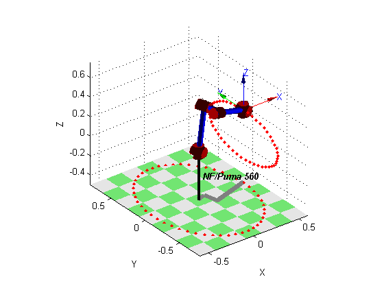

Contents
function projeto2(p560)
close all;
robot = p560.nofriction();
2.2.a Desenho de elipse no chão do espaço de trabalho com o robô puma560
n = 25;
r1 = 0.4;
r2 = 0.75;
z = -0.35;
angle = linspace(0, 2*pi, n)';
points = [r1*cos(angle), r2*sin(angle), z*ones(n, 1)];
T = transl(points);
q = robot.ikine(T);
function plotFrame(n)
robot.plot(q(n, :));
hold('on');
plot2(points(n, :), 'r.');
end
plot2gif(size(q, 1), @plotFrame, 'html\2.1.gif');
Warning: Initial joint configuration results in a (near-)singular
configuration, this may slow convergence
Warning: solution diverging at step 3, try reducing alpha
Warning: ikine: iteration limit 1000 exceeded (row 8), final err 0.000017
Warning: solution diverging at step 48, try reducing alpha


2.1.b Desenho de elipse na parede do espaço de trabalho com o robô puma560
n = 25;
r1 = 0.2;
r2 = 0.4;
x = 0.6;
angle = linspace(0, 2*pi, n)';
points = [x*ones(n, 1), r2*sin(angle), r1*cos(angle)];
T = transl(points);
q = robot.ikine(T);
plot2gif(size(q, 1), @plotFrame, 'html\2.2.gif');
Warning: Initial joint configuration results in a (near-)singular
configuration, this may slow convergence


end